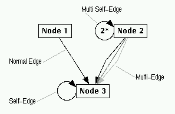

Multi-Edges and Self-Edges
Multi-edges and self-edges are special kinds of edges that are treated in a different way in the graph layout. Multi-edges occur when there are two or more edges between the same parent and child node. All these edges form one multi-edge. The single edges of a multi-edge are spread in the middle between the parent and the child (see figure below). The gap between the single edges can be adjusted with the Options/Layout Settings... dialog window.
Self-edges are edges where the parent and child node are the same, i.e. a node that has an edge pointing to itself. Self-edges are visualized with a circular edge at the left respective lower side of the node. The user can adjust the radius of self-edges with the Options/Layout Settings... dialog window. Multi self-edges are also possible when a node has edges with a reference to itself many times in its list of children. These edges are visualized by writing the number of self-edges in the middle of the circle. The attributes of self-edges are considered in the graph visualization, but it is undefined which self-edge of a multi self-edge is taken for the attributes. So for example, if you have a multi self-edge containing a red and a blue self-edge, then it is not defined whether the multi self-edge is drawn in red or blue.
There is no special handling for multi-edges and self-edges in the term representation. So to define a multi-edge, one single edge to the child can be defined as a subterm and the other single edge is a reference to the same subterm.

Visualization of multi-edges and self-edges in uDraw(Graph)